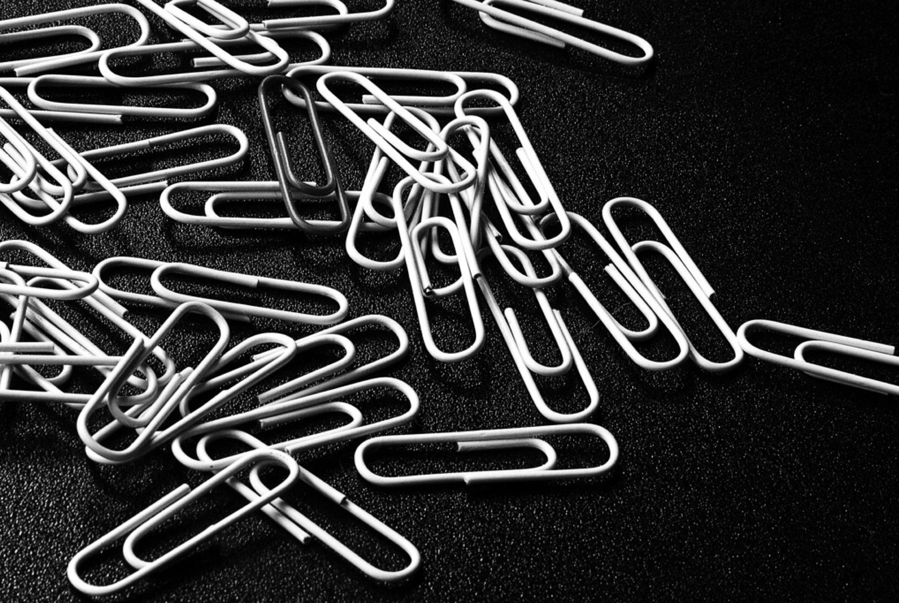

The Gem Paper Clip 1899
GOOD DESIGN IS UNOBSTRUSIVE. Products fulfilling a purpose are like tools. They are neither decorative objects nor works of art. Their design should therefore be both neutral and restrained, to leave room for the user’s self-expression.
